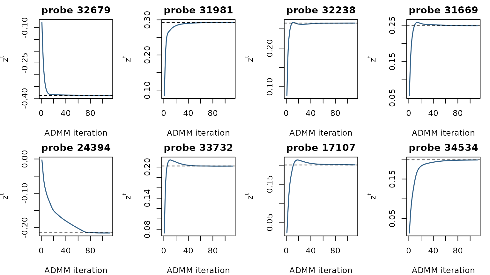

Federated Cox-Lasso via Consensus ADMM on DLBCL
Balasubramanian Narasimhan
2026-10-06
Source:vignettes/cvxr-cox-lasso-dlbcl.Rmd
cvxr-cox-lasso-dlbcl.RmdIntroduction
This vignette runs the threshold-FHE consensus-ADMM protocol on a real, high-dimensional survival problem: a stratified Cox lasso on the diffuse large-B-cell lymphoma (DLBCL) gene-expression cohort of Rosenwald et al. (2002), the dataset Bayle et al. (2025) use to motivate distributed Cox estimation.
The cox and cox-threshold vignettes give an
optimizer such as mle() an objective function that runs one
encrypted round across the sites. That does not work for CVXR, which does not call a function we
supply: it converts a symbolic problem once to a standard form and
passes that to a solver. Instead we use federated consensus
ADMM (Boyd, Parikh, Chu, Peleato and Eckstein, 2011). The
global problem is split into per-site subproblems, each solved by CVXR in the clear, and only the
cross-site consensus average is encrypted. Disciplined
parametrized programming (DPP) keeps the per-site solves fast: between
iterations only the Parameter values change, not the
problem structure.
We develop the fit in two passes. First we run the whole thing in the clear to fix the target: standardize, screen, and solve the consensus ADMM with an ordinary unencrypted average, checking against the centralized CVXR solve. Then we put it under threshold FHE, replacing each cross-site sum — the standardization moments, the screening statistics, and the per-iteration consensus average — with one round of the encrypted-summation primitive, and confirm the encrypted fit reproduces the in-the-clear reference.
Reproducibility and verification. The code chunks in this vignette are the pipeline; they are gated
eval = RECOMPUTEand do not run when the vignette builds (every encrypted ADMM iteration repeats the per-site CVXR solves). The displayed numbers come fromdata(cvxr_consensus), which was produced by extracting these chunks withknitr::purl()and running them. To verify the results, do the same:vig <- system.file("doc", "cvxr-cox-lasso-dlbcl.Rmd", package = "homomorpheR") RECOMPUTE <- TRUE # un-gate the chunks src <- knitr::purl(vig, output = tempfile(fileext = ".R"), quiet = TRUE) source(src) # runs the pipeline (minutes) fresh <- cvxr_consensus # just recomputed data(cvxr_consensus, package = "homomorpheR") # the shipped copy max(abs(fresh$z_enc - cvxr_consensus$z_enc)) # small, not zeroThreshold key generation is randomized, so a re-run reproduces the shipped coefficients up to CKKS approximation noise, not bit-for-bit. This
purl()-then-source()is exactly whatdata-raw/cvxr_consensus.Rdoes to build the shipped object. Building the vignette with the environment variableHOMOMORPHER_RECOMPUTE=trueruns the chunks in place, and every number displayed then comes from that run.
The global problem and its consensus split
The three molecular subgroups (GCB, ABC, Type III) are our sites: they arise from different cells of origin and have systematically different prognosis. Using them as sites is a choice made for this demonstration. With \(N\) sites, per-site standardized design matrices \(X_k \in \mathbb{R}^{n_k \times p}\), event times \(t_k\), status \(\delta_k\), a shared coefficient \(\beta \in \mathbb{R}^p\), and the per-stratum Cox partial log-likelihood \(\ell_k\) in Breslow form, the global problem is
\[ \min_{\beta \in \mathbb{R}^p}\; -\sum_{k=1}^{N}\ell_k(\beta)\;+\;\lambda\lVert\beta\rVert_1 . \]
Because the partial likelihood factorizes additively across strata, the consensus split introduces per-site copies \(x_k\) and a global consensus \(z\):
\[ \min_{\{x_k\},\,z}\; \sum_k\bigl(-\ell_k(x_k)\bigr) + \lambda\lVert z\rVert_1 \quad\text{s.t.}\quad x_k = z,\ \forall k, \]
with augmented-Lagrangian iteration
\[ \begin{aligned} x_k^{t+1} &= \arg\min_x -\ell_k(x) + \tfrac{\rho}{2}\lVert x - z^t + u_k^t\rVert_2^2,\\ z^{t+1} &= S_{\lambda/(N\rho)}\!\Bigl(\tfrac{1}{N}\sum_k (x_k^{t+1}+u_k^t)\Bigr),\\ u_k^{t+1} &= u_k^t + (x_k^{t+1}-z^{t+1}), \end{aligned} \]
where \(S_\tau(v)=\operatorname{sign}(v)\max(|v|-\tau,0)\) is soft-thresholding (the proximal map of \(\tau\lVert\cdot\rVert_1\)). The \(x\)-update is the per-site CVXR solve; the \(z\)-update needs the cross-site average \(\bar w=\tfrac1N\sum_k(x_k+u_k)\), which traverses the encrypted channel at every iteration; the soft-threshold is closed-form at the aggregator and adds no cryptographic depth.
The pipeline needs survival and CVXR alongside the encryption
packages.
The federated fit in the clear
The three subgroups are our sites. We load the cohort, split it by subgroup, and keep each site’s raw expression matrix, event times, and status.
data(DLBCL, package = "homomorpheR") # 235 patients: survival + signatures
data(DLBCL_gex, package = "homomorpheR") # 235 patients x 6416 Lymphochip probes
dlbcl <- DLBCL
dlbcl$Subgroup <- factor(dlbcl$Subgroup, levels = c("GCB","ABC","Type III"))
stopifnot(identical(as.character(dlbcl$ID), rownames(DLBCL_gex))) # rows aligned
sites_raw <- lapply(levels(dlbcl$Subgroup), function(s) {
idx <- which(dlbcl$Subgroup == s)
list(name = s, X = DLBCL_gex[idx, ], time = dlbcl$time[idx],
status = dlbcl$status[idx])
})
names(sites_raw) <- levels(dlbcl$Subgroup)
N_sites <- length(sites_raw)
N_total <- sum(vapply(sites_raw, function(s) nrow(s$X), 1L))
P_raw <- ncol(DLBCL_gex)We standardize the features so the L1 penalty applies uniformly
across predictors on different scales. The pooled mean and variance are
additive over sites: site \(k\)
contributes \(S_k=\sum_{i\in k}x_i\)
and \(Q_k=\sum_{i\in k}x_i^2\), from
which \(\mu=\tfrac1{N_{\mathrm{tot}}}\sum_k
S_k\) and \(\sigma^2=\tfrac1{N_{\mathrm{tot}}}\sum_k
Q_k-\mu^2\). In the clear this is a pair of
colSums.
pool_plain <- function(sites, n_total) {
s <- Reduce(`+`, lapply(sites, function(s) colSums(s$X)))
q <- Reduce(`+`, lapply(sites, function(s) colSums(s$X^2)))
mu <- s / n_total
sigma2 <- pmax(q / n_total - mu^2, .Machine$double.eps)
list(mu = mu, sigma = sqrt(sigma2))
}
## Each site standardizes its own rows with the pooled moments.
standardize <- function(sites, pool) lapply(sites, function(s) list(
name = s$name,
X = sweep(sweep(s$X, 2, pool$mu, "-"), 2, pool$sigma, "/"),
time = s$time, status = s$status))
pool <- pool_plain(sites_raw, N_total)
sites_std <- standardize(sites_raw, pool)Rather than fit all \(p = 6416\) probes, we pre-screen to the \(K = 100\) probes with the strongest univariate association with survival. This keeps the memory footprint of the example manageable, and it is the screen-then-fit pattern Bayle et al. (2025) use on this cohort. For probe \(g\) on stratum \(k\) in event-time order with risk set \(R_i^{(k)}\) at event \(i\), \(U_g^{(k)}=\sum_{i\in k,\delta_i=1}(X_{i,g}-\overline X_{R_i^{(k)},g})\) is the score and \(I_g^{(k)}=\sum_{i\in k,\delta_i=1}\widehat{\operatorname{Var}}_{R_i^{(k)}}(X_{:,g})\) the information; both sum across sites, and the screen ranks probes by \(|Z_g|=|U_g|/\sqrt{I_g}\).
K <- 100L
score_info_at_zero <- function(X, time, status) {
p <- ncol(X)
ord <- order(time)
X_o <- X[ord, , drop = FALSE]; stat_o <- status[ord]; time_o <- time[ord]
n <- nrow(X_o); U <- numeric(p); I <- numeric(p)
## Risk set at event i: every row with time >= t_i, tied rows included.
first <- match(time_o, time_o)
for (i in seq_len(n)) {
if (stat_o[i] == 1L) {
risk <- X_o[first[i]:n, , drop = FALSE]
mu_R <- colMeans(risk)
U <- U + (X_o[i, ] - mu_R)
I <- I + colSums(sweep(risk, 2, mu_R, "-")^2) / nrow(risk)
}
}
list(U = U, I = I)
}
screen_plain <- function(sites, K) {
UI <- lapply(sites, function(s) score_info_at_zero(s$X, s$time, s$status))
U <- Reduce(`+`, lapply(UI, `[[`, "U"))
I <- Reduce(`+`, lapply(UI, `[[`, "I"))
Z <- U / sqrt(pmax(I, .Machine$double.eps))
order(abs(Z), decreasing = TRUE)[seq_len(K)]
}
## Each site keeps the screened probes of its own rows.
keep_probes <- function(sites, idx) lapply(sites, function(s) list(
name = s$name, X = s$X[, idx],
time = s$time, status = s$status))
top_idx <- screen_plain(sites_std, K)
sites_KS <- keep_probes(sites_std, top_idx)
sigma_K <- pool$sigma[top_idx]sites_KS now holds each stratum on the \(K = 100\) screened probes, and
sigma_K keeps their pooled SDs for the back-transform to
the original gene-expression scale.
The centralized stratified Cox-lasso fit — our ground truth — is a single CVXR solve summing the per-stratum Breslow partial likelihoods plus the L1 penalty.
LAMBDA <- 5
build_cox_breslow_nll <- function(beta_var, X_s, time_s, status_s) {
ord <- order(time_s)
X_o <- X_s[ord, , drop = FALSE]; stat_o <- status_s[ord]
time_o <- time_s[ord]
n <- nrow(X_o); eta_o <- X_o %*% beta_var
## Risk set at event i: every row with time >= t_i, tied rows included.
first <- match(time_o, time_o)
terms <- list()
for (i in seq_len(n)) {
if (stat_o[i] == 1L) {
terms[[length(terms) + 1L]] <-
log_sum_exp(eta_o[first[i]:n, 1]) - eta_o[i, 1]
}
}
Reduce(`+`, terms)
}
beta_var <- Variable(K, name = "beta")
nll_per <- lapply(sites_KS, function(s)
build_cox_breslow_nll(beta_var, s$X, s$time, s$status))
agg_prob <- Problem(Minimize(Reduce(`+`, nll_per) +
LAMBDA * p_norm(beta_var, 1)))
suppressMessages(suppressWarnings(
psolve(agg_prob, solver = "CLARABEL", verbose = FALSE)))
agg_beta <- as.numeric(value(beta_var))The distributed fit splits this objective into per-site subproblems
tied by a consensus variable. Each local problem is built so DPP
applies: \(z\) and \(u\) enter as Parameters whose
values change every ADMM iteration while the symbolic structure does
not; \(X_k\), time, status, and \(\rho\) are constants.
RHO <- 50
build_local <- function(X_k, time_k, status_k, rho) {
p <- ncol(X_k)
x <- Variable(p); zp <- Parameter(p); up <- Parameter(p)
nll <- build_cox_breslow_nll(x, X_k, time_k, status_k)
aug <- (rho / 2) * sum_squares(x - zp + up)
list(prob = Problem(Minimize(nll + aug)), x = x, zp = zp, up = up)
}
sites_problem <- lapply(sites_KS, function(s)
build_local(s$X, s$time, s$status, RHO))The ADMM driver below is the whole federated algorithm. How the
cross-site average is formed is left to its consensus
argument, a function of the per-site \((x_k,u_k)\) vectors. Everything else (the
local CVXR solves, the
soft-threshold \(z\)-update, the dual
update, the stopping rule) is ordinary R. We call it now with an
unencrypted average, and later, unchanged, with an encrypted one.
A note on the constants. We fix \(\rho =
50\) and a cap of 200 iterations, and stop when the absolute rule
primal < TOL && dual < TOL holds, with
TOL = 0.005; the dual residual is \(\rho\lVert z^{t+1}-z^t\rVert\).
MAX_ITER <- 200L; TOL <- 5e-3
soft_threshold <- function(v, tau) sign(v) * pmax(abs(v) - tau, 0)
run_admm <- function(sites_problem, consensus) {
site_x <- replicate(N_sites, rep(0, K), simplify = FALSE)
site_u <- replicate(N_sites, rep(0, K), simplify = FALSE)
z_curr <- rep(0, K); trajectory <- list()
for (iter in seq_len(MAX_ITER)) {
for (i in seq_len(N_sites)) {
value(sites_problem[[i]]$zp) <- z_curr
value(sites_problem[[i]]$up) <- site_u[[i]]
suppressMessages(suppressWarnings(
psolve(sites_problem[[i]]$prob, solver = "CLARABEL",
verbose = FALSE)))
site_x[[i]] <- as.numeric(value(sites_problem[[i]]$x))
}
w_avg <- consensus(site_x, site_u)
z_new <- soft_threshold(w_avg, LAMBDA / (N_sites * RHO))
site_u <- Map(function(u, x) u + (x - z_new), site_u, site_x)
primal <- sqrt(mean(vapply(site_x, function(x) sum((x - z_new)^2), 0)))
dual <- RHO * sqrt(sum((z_new - z_curr)^2))
z_curr <- z_new; trajectory[[iter]] <- z_new
if (primal < TOL && dual < TOL) break
}
list(z = z_curr, trajectory = trajectory)
}
plain_consensus <- function(site_x, site_u)
Reduce(`+`, Map(`+`, site_x, site_u)) / length(site_x)
ref <- run_admm(sites_problem, plain_consensus)
z_ref <- ref$z
n_iter_ref <- length(ref$trajectory)In the clear the consensus is a single line — the average of the
\((x_k+u_k)\) vectors. The unencrypted
ADMM converges in 112 iterations and matches the centralized CVXR fit to 2.6 × 10-3 in
maximum absolute coefficient difference, so agg_beta —
equivalently z_ref — is the target the encrypted protocol
must reproduce.
The same fit under threshold FHE
Four quantities cross a site boundary: the standardization moments
\((S_k,Q_k)\), the screening statistics
\((U^{(k)},I^{(k)})\), and, at each
ADMM iteration, the consensus sum \(\sum_k(x_k+u_k)\) and the squared primal
residuals \(\lVert x_k-z\rVert^2\) of
the stopping rule. run_admm forms the primal residual in
the clear here; in a deployment it is one more sum of the same kind.
Each of the first three is a sum over sites, so each becomes one round
of the same threshold-FHE summation primitive the master/worker fits
use: every site encrypts its contribution under the joint public key,
the aggregator adds the encrypted contributions, and the total is
recovered by \(n\)-of-\(n\) partial decryption. For the consensus,
the encrypted total is first scaled by \(1/N\), so what is decrypted is the average
\(\bar w\). The local CVXR work and run_admm are
untouched.
We use the same threshold infrastructure as
cox-threshold.Rmd: a CKKS context with
Feature$MULTIPARTY and
make_threshold_master(), which runs the key-generation
chain through the sites. Each site generates its own share and keeps it;
only public keys move along the chain, so no party — the aggregator
included — ever holds the joint secret.
So the sites have to exist before the aggregator does. Here we give each subgroup a site object to hold its share.
cc <- fhe_context("CKKS",
multiplicative_depth = 1L,
scaling_mod_size = 59L,
first_mod_size = 60L,
batch_size = 8192L,
features = c(Feature$MULTIPARTY))
key_sites <- lapply(levels(dlbcl$Subgroup), function(s)
make_worker(s, data = NULL, contribution_fn = function(data, theta) NULL))
master <- make_threshold_master("Aggregator",
crypto_context = cc, sites = key_sites)Apart from the encrypted values in each round, this setup is the only
exchange between the aggregator and the sites. Each site kept its own
secret share and a copy of the public parameters, and everything below
encrypts with encrypt(site, value), which uses those
parameters. site_params(site) returns them as an
OpenFHEParams object. Its class has two properties, the
crypto context and the joint public key, and none for a key share:
homomorpheR::OpenFHEParams## <homomorpheR::OpenFHEParams> class
## @ parent : <homomorpheR::PublicParams>
## @ constructor: function(cc, pk) {...}
## @ validator : <NULL>
## @ properties :
## $ cc: <openfhe.R::CryptoContext>
## $ pk: <openfhe.R::PublicKey>The standardization round is pool_plain with the two
colSums encrypted: each site encrypts \(S_k\) and \(Q_k\), the aggregator sums under encryption
and threshold-decrypts the pooled moments. The decrypted moments go back
to the sites, which standardize their own rows with them. (For brevity
we treat \(N_{\mathrm{tot}}\) as known
to the aggregator; hiding the per-site head-counts is one more sum of
the same kind.)
## Site side. Each site forms its own moments and encrypts them under
## the joint key; what leaves is encrypted. Encrypting at the
## aggregator instead would mean handing it the per-site column sums in
## the clear first, which is the disclosure this round exists to avoid.
site_moments <- function(site, s)
list(sum = encrypt(site, colSums(s$X)),
sumsq = encrypt(site, colSums(s$X^2)))
## Aggregator side. It receives only the encrypted moments, adds them,
## and decrypts the totals.
pool_encrypted <- function(master, parts, n_total, p_raw) {
pooled_sum <- decrypt(
master, Reduce(`+`, lapply(parts, `[[`, "sum")), len = p_raw)
pooled_sumsq <- decrypt(
master, Reduce(`+`, lapply(parts, `[[`, "sumsq")), len = p_raw)
mu <- pooled_sum / n_total
sigma2 <- pmax(pooled_sumsq / n_total - mu^2, .Machine$double.eps)
list(mu = mu, sigma = sqrt(sigma2))
}
moment_parts <- Map(site_moments, key_sites, sites_raw) # at the sites
fhe_pool <- pool_encrypted(master, moment_parts, N_total, P_raw)
pool_agree <- list(mu = max(abs(fhe_pool$mu - pool$mu)),
sigma = max(abs(fhe_pool$sigma - pool$sigma)))
## The decrypted moments go back to the sites, which standardize their
## own rows with them.
sites_std_fhe <- standardize(sites_raw, fhe_pool)The encrypted moments agree with the unencrypted pool to
4.6 × 10-16 (mean) and 3.2 × 10-15 (SD), the CKKS
approximation error. The screening round works the same way, on the rows
the sites have just standardized: the score_info_at_zero
summands \((U^{(k)},I^{(k)})\) are
encrypted and summed, and we confirm it selects the same probes, in the
same order.
## Site side: compute the score and information at beta = 0 on the
## site's own rows, and encrypt both before returning them.
site_score_info <- function(site, s) {
z <- score_info_at_zero(s$X, s$time, s$status)
list(U = encrypt(site, z$U), I = encrypt(site, z$I))
}
## Aggregator side: it receives only the encrypted (U, I), adds them,
## and decrypts the totals.
screen_encrypted <- function(master, UI, p_raw, K) {
U <- decrypt(master, Reduce(`+`, lapply(UI, `[[`, "U")),
len = p_raw)
I <- decrypt(master, Reduce(`+`, lapply(UI, `[[`, "I")),
len = p_raw)
Z <- U / sqrt(pmax(I, .Machine$double.eps))
order(abs(Z), decreasing = TRUE)[seq_len(K)]
}
UI_parts <- Map(site_score_info, key_sites, sites_std_fhe) # at the sites
fhe_top <- screen_encrypted(master, UI_parts, P_raw, K)
stopifnot(identical(fhe_top, top_idx)) # same probes, same order, as in the clear
## The decrypted screen goes back to the sites, which keep those probes.
sites_KS_fhe <- keep_probes(sites_std_fhe, fhe_top)The encrypted ADMM below runs on the design the two encrypted rounds
produced: each site’s rows, standardized with the decrypted pooled
moments and restricted to the decrypted screen. The in-the-clear design
serves only as the reference. The consensus round is the only piece left
to encrypt. It mirrors plain_consensus. Each site encrypts
its own \((x_k+u_k)\). The aggregator
sums the encrypted values, scales by \(1/N\) (one multiplication by an unencrypted
constant, which uses one level of multiplicative depth), and
threshold-decrypts the length-\(K\)
average. Soft-thresholding is applied to that average in the clear at
the aggregator.
## Site side: site k forms x_k + u_k and encrypts it. What leaves the
## site is encrypted.
site_consensus_term <- function(site, x_k, u_k)
encrypt(site, x_k + u_k)
## Aggregator side: it receives only the encrypted terms, adds them,
## scales by 1/N, and decrypts the average.
aggregate_consensus <- function(master, cts, K)
decrypt(master, Reduce(`+`, cts) * (1 / length(cts)), len = K)
## One consensus round: the site step at every site, then the
## aggregator step.
encrypted_consensus <- function(site_x, site_u)
aggregate_consensus(master,
Map(site_consensus_term, key_sites, site_x, site_u),
K)
## The local problems, on the design the encrypted rounds produced.
sites_problem_fhe <- lapply(sites_KS_fhe, function(s)
build_local(s$X, s$time, s$status, RHO))
fhe <- run_admm(sites_problem_fhe, encrypted_consensus)
z_enc <- fhe$z
trajectory <- fhe$trajectory
n_iter_enc <- length(trajectory)run_admm is called unchanged, on local problems built
from the encrypted-round design and with
encrypted_consensus in place of
plain_consensus. The encrypted ADMM ran for 112 iterations,
and its coefficients differ from the unencrypted run by at most
2.4 × 10-7, the CKKS approximation error.
Comparison with the centralized fit
We compare the threshold-FHE consensus to the centralized CVXR fit on both the standardized scale (where ADMM lives) and the back-transformed original gene-expression scale.
beta_orig_agg <- agg_beta / sigma_K
beta_orig_enc <- z_enc / sigma_K
cmp <- data.frame(
check.names = FALSE,
Scale = c("standardized", "original"),
`Max abs diff` = c(max(abs(z_enc - agg_beta)),
max(abs(beta_orig_enc - beta_orig_agg))),
`L1 diff` = c(sum(abs(z_enc - agg_beta)),
sum(abs(beta_orig_enc - beta_orig_agg))))
ktab(cmp, digits = 4,
col.names = c("Scale",
"$\\max_j \\lvert \\hat\\beta_j^{\\text{ADMM}} - \\hat\\beta_j^{\\text{centralized}} \\rvert$",
"$\\lVert \\hat\\beta^{\\text{ADMM}} - \\hat\\beta^{\\text{centralized}} \\rVert_1$"),
caption = "Threshold-FHE consensus ADMM vs. centralized Cox-lasso")| Scale | \(\max_j \lvert \hat\beta_j^{\text{ADMM}} - \hat\beta_j^{\text{centralized}} \rvert\) | \(\lVert \hat\beta^{\text{ADMM}} - \hat\beta^{\text{centralized}} \rVert_1\) |
|---|---|---|
| standardized | 0.0026 | 0.0096 |
| original | 0.0048 | 0.0166 |
n_agg <- sum(abs(agg_beta) > 1e-7)
n_enc <- sum(abs(z_enc) > 1e-7)
n_inter <- sum((abs(agg_beta) > 1e-7) & (abs(z_enc) > 1e-7))
stopifnot(n_inter == n_agg) # the prose below asserts thisThe active set has 39 nonzero coefficients in the centralized fit and 39 in the encrypted ADMM fit; the intersection is 39 — every probe selected by the centralized fit is recovered by the encrypted distributed protocol.
The figure below shows the consensus trajectory \(z^t\) for the eight probes with largest \(|z|\) at convergence, with the centralized fit drawn as a horizontal reference. The encrypted iterates follow ADMM’s own trajectory toward the centralized fit; they are not iterations of the centralized solver.
top8 <- order(-abs(z_enc))[1:8]
labs <- paste("probe", colnames(DLBCL_gex)[top_idx][top8])
op <- par(mfrow = c(2, 4), mar = c(4, 4, 2, 1), cex = 0.8)
for (j in seq_along(top8)) {
vals <- vapply(trajectory, function(z) z[top8[j]], numeric(1))
plot(seq_along(vals), vals, type = "l", lwd = 1.6, col = "steelblue4",
xlab = "ADMM iteration", ylab = expression(z^t), main = labs[j])
abline(h = agg_beta[top8[j]], lty = 2)
}
Consensus trajectories for the eight largest-magnitude coefficients. Solid lines are the encrypted ADMM iterates; dashed lines are the centralized CVXR fit. Standardized scale.
par(op)What the protocol hides and reveals
The aggregator learns the pooled per-probe sums \(\sum_k S_k\) and \(\sum_k Q_k\) (round 1), the pooled per-probe univariate Cox score \(U_g\) and information \(I_g\) and the indices of the top-100 screened probes (round 2), and, at every ADMM iteration, the cross-site average \(\bar w\) before soft-thresholding and the primal residual. Each is an aggregated population-level statistic over 235 patients, not patient-level data. None of the per-site design matrices \(X_k\), the per-site \((S_k,Q_k)\), the per-site \((U,I)\) contributions, or the per-site \((x_k+u_k)\) vectors reaches the aggregator in cleartext. Decryption at every step is \(n\)-of-\(n\) threshold: no single party — the aggregator included — can recover any intermediate quantity unilaterally.
Two steps in this vignette would not exist in a real deployment. The unencrypted reference pass forms the per-site averages that the protocol keeps encrypted, and the centralized solve pools all the data. We can run both only because this vignette holds all three sites’ data in one R session. A deployment also has to choose \(\rho\) without the centralized solve.
A deployment can instead choose \(\rho\) on a surrogate cohort built from
public design facts, as vignette("cvxr-consensus-admm-dp")
does. When the protocol also spends a privacy budget, as in
vignette("cvxr-consensus-admm-dp"), encrypting the sweep is
not enough, and the constants have to be chosen from data that does not
count against the budget.
Discussion
-
CVXR problems work unchanged. Each site solves its
local Cox-lasso problem in the clear. Only the consensus update is
encrypted. The CVXR
Problem(Minimize(...))is the same as in the clear, andrun_admmis called withencrypted_consensusinstead ofplain_consensus. - Encryption does not change the fit. The encrypted fit matches the unencrypted ADMM to 2.4 × 10-7 and has the same active set. The remaining gap to the centralized solve (2.6 × 10-3) comes from stopping ADMM at a finite tolerance, not from the encryption.
- No single party holds the secret key. Each site generated its own share during key generation and kept it. The aggregator holds only the joint public key. No single party can decrypt an intermediate value, and each round’s result is decrypted only when every site contributes a partial decryption.
-
DPP keeps the inner loop fast. Each site’s CVXR problem is built once at setup;
ADMM iterations only update the
Parametervalues.
Limitations
- Honest-but-curious trust. A site that misreports its local \((x_k+u_k)\) can corrupt the consensus; detecting this needs commitments / zero-knowledge proofs not implemented here.
- The aggregator sees \(\bar w\) at every iteration. It is decrypted before soft-thresholding, so it includes the coordinates that \(z^t\) sets to zero.
- No output privacy. The released \(\hat\beta = z^\star\) is the same coefficient vector as the centralized fit; output-level protection is out of scope here and is demonstrated in the companion DP vignette.